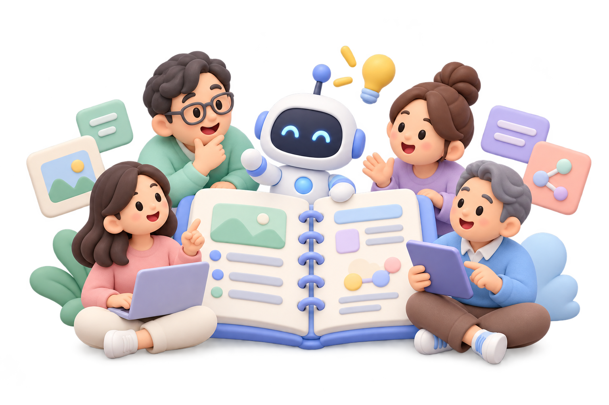
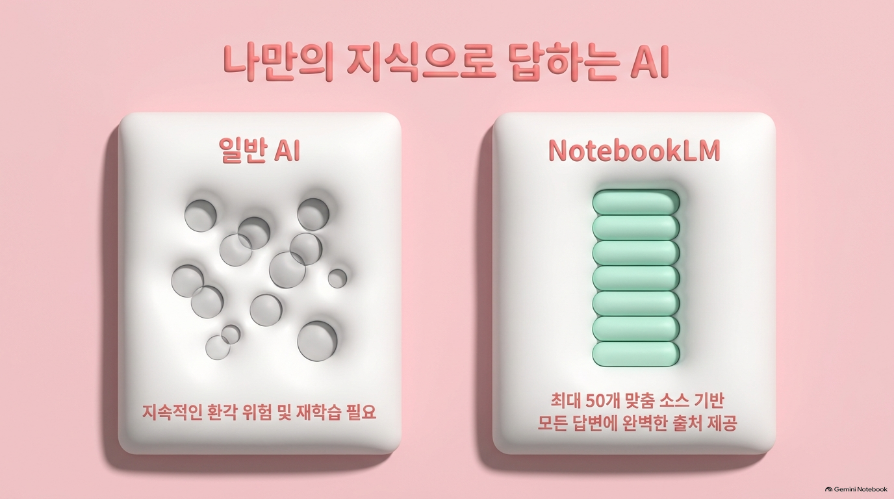
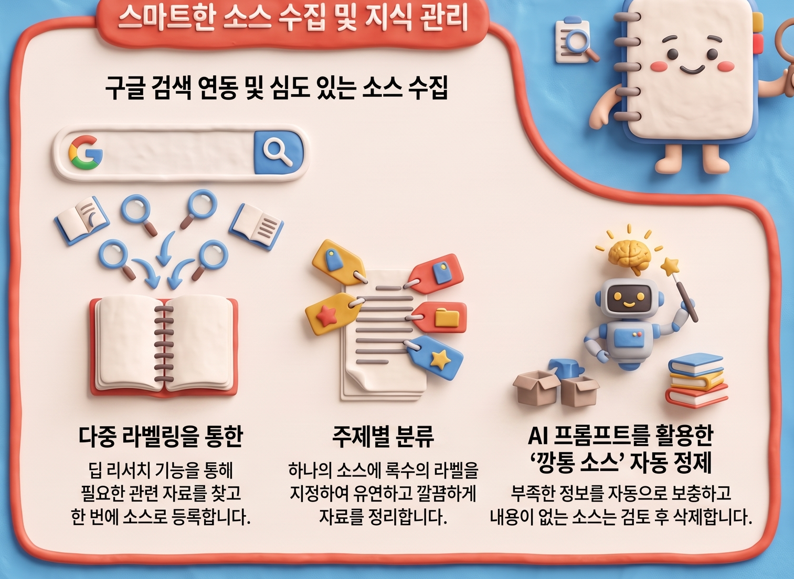
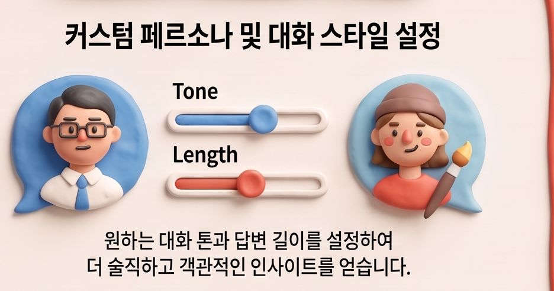
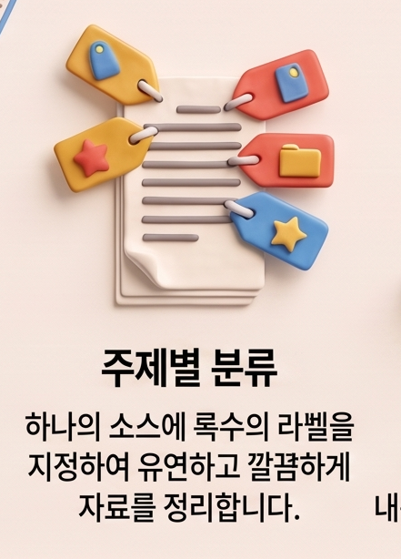
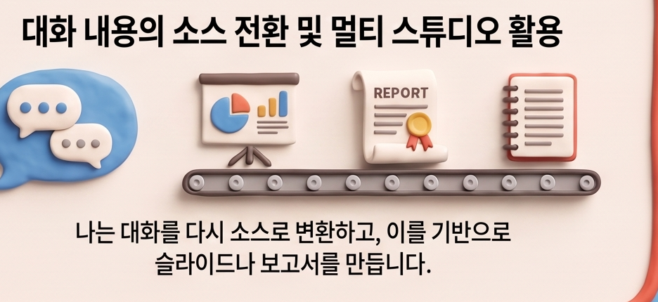
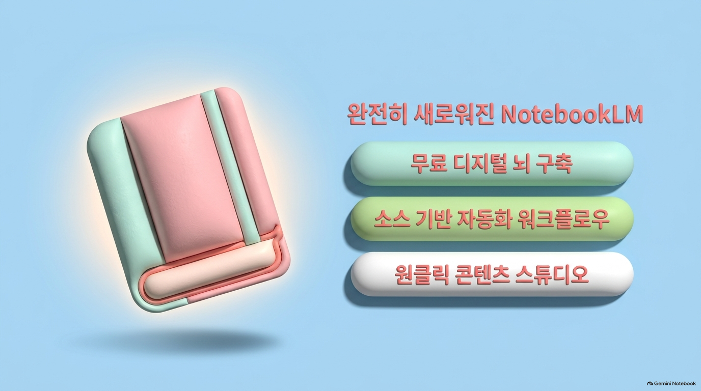

표지 · 1분
노트북LM 마스터하기
내 자료로 만드는 AI 학습 도우미
성인 초급자 10명 내외60분 실습AI연구소 이연희 강사

설명 · 1분
강의 순서
자료 준비
개념 → 노트북 생성 → 소스 추가
학습 실습
질문 → 출처 확인 → 요약·퀴즈
결과 활용
기능 안내 → BananaNL → 결과 검토
설명 · 3분
노트북LM 개념

내 자료를 바탕으로 답하는 AI
노트북: 자료를 모으는 공간
소스: 추가한 자료
프롬프트: AI에 보내는 질문·요청
첨부 PDF의 수치·완벽한 출처 표현: 검증 대상
설명 · 2분
소스 수집

역할: 학습·업무 자료를 한곳에 모으기
장점: 필요한 자료의 비교와 재확인
줄어드는 수고: 여러 문서를 오가는 탐색
활용: 단원별 참고 자료·업무 조사 자료
이미지의 검색·자동 정제 설명: 실제 화면 확인 후 활용
시연·실습 · 2분
새 노트북 생성
- Google 로그인 → 새 노트북 생성
- 과제: 나의 첫 학습 노트북 만들기
- 완료 기준: 이름을 정한 노트북이 열린 상태
시연 · 3분
유튜브 소스 추가
- 유튜브 소스 추가 실습용 영상
- 링크 복사 → 소스 추가 → 유튜브 URL 입력
- 추가 결과 확인: 소스 목록의 자료 표시
실습 · 5분
첫 소스 추가 실습
- 과제: 예제 영상 링크를 소스로 추가
- 완료 기준: 소스 목록 표시 + 첫 질문 입력
복사해서 사용
이 자료는 무엇을 설명하는지 쉬운 말로 알려줘.
보충 실습 · 2분
대체 소스 추가
- 추가 실패: 강사가 제공한 대체 텍스트 선택
- 텍스트 복사 → 텍스트 소스 추가 → 첫 질문 입력
- 완료 기준: 소스 목록 표시 + 질문 입력
대체 텍스트 · 복사 후 소스로 추가
효과적인 복습 방법은 배운 내용을 짧게 요약하고, 스스로 질문을 만든 뒤 답하는 것이다. 답이 기억나지 않으면 원문을 다시 확인한다. 틀린 내용을 고친 뒤 다음 날 다시 복습한다.
이미지의 ‘깡통 소스’ 자동 정제: 빈 자료의 점검·보완 개념 · 반복 점검 수고 감소 · 수업자료 누락 확인에 활용 · 자동 실행 여부 미확인
설명·시연 · 3분
대화 스타일 설정

역할: 설명의 대상·말투·길이 지정
장점: 내 수준에 맞는 설명 요청
줄어드는 수고: 어려운 표현의 재작성
활용: 성인 초급자용 수업 설명
복사해서 사용
이 자료의 핵심을 초보자에게 쉬운 말로 3가지로 설명해줘.
시연·실습 · 4분
출처 확인
- 답변의 출처 표시 선택 → 연결된 원문 확인
- 과제: 답변 한 문장과 근거 대목 비교
- 완료 기준: 근거 위치와 일치 여부 설명
- 활용: 보고서에 넣기 전 사실 확인
휴식 · 2분
짧은 휴식
눈·어깨 휴식 · 소스 추가와 첫 질문 점검
설명 · 2분
기능 전체 안내

첨부 안내 이미지 · 기능 설명과 실제 지원 여부의 구분
설명 · 2분
주제별 분류

이미지 항목: 다중 라벨링 · 주제별 분류
역할: 자료에 주제 표시를 붙여 정리
장점: 필요한 자료의 빠른 재탐색
줄어드는 수고: 반복 검색·자료 재분류
활용: 영어 단원·업무 프로젝트별 자료 정리
실제 라벨 기능 확인 전: 자료 제목에 주제 표시
설명 · 2분
대화 내용의 소스 전환

역할: 검토한 대화를 후속 작업의 자료로 활용
장점: 정리한 내용을 반복 활용
줄어드는 수고: 같은 설명의 재작성
활용: 토론 요점 → 메모 → 보고서 초안
실제 화면 확인 후: 지원되는 저장·소스 전환 사용
설명·예시 · 2분
스튜디오 활용

같은 자료의 다양한 활용
역할: 학습자료의 형식 선택
장점: 읽기·듣기 중심 복습
줄어드는 수고: 형식별 초안 작성
활용: PDF 예시 확인·음성 일부 재생
첨부 자료: 사용자 제공 예시 · 생성 도구 미확인 · 음성은 짧은 구간만 재생
실습 · 4분
요약 생성
복사해서 사용
이 자료의 핵심 내용을 초보자가 이해하기 쉽게 5가지로 요약해줘.
- 과제: 학습용 요약 5가지 생성
- 완료 기준: 요약 한 항목을 원문과 비교
- 활용: 긴 교육자료의 복습 메모 작성
실습 · 3분
핵심 질문 생성
복사해서 사용
이 자료를 이해하는 데 필요한 핵심 질문 5개를 만들어줘.
- 과제: 핵심 질문 5개 생성 후 하나에 직접 답하기
- 완료 기준: 질문 생성 + 직접 답변 1개
- 활용: 수업 토론·자기 점검 질문 초안
시연·실습 · 7분
퀴즈 생성
복사해서 사용
이 자료를 바탕으로 객관식 퀴즈 5개와 정답·해설을 만들어줘.
- 과제: 쉬운 객관식 퀴즈 5개 생성·풀이
- 완료 기준: 5문항 확인 + 한 문항의 정답 근거 확인
- 생성 대기: 채팅의 예시 프롬프트 활용
설명·시연 · 3분
🍌 BananaNL 소개
NotebookLM 자체 기능
자료 기반 답변·요약·학습자료 생성
BananaNL 확장 기능
프롬프트 예시 선택·입력창 삽입·저장·재사용
- 장점: 요청문 탐색·반복 복사의 수고 감소
- 활용: 예시 선택 → 내 자료에 맞게 수정 → 직접 전송
- 자동 전송 없음 · 다른 AI 연동 등 일부 기능의 유료 구분
시연·선택 실습 · 3분
BananaNL 크롬 설치
- 크롬에서 설치 페이지 열기 → Chrome에 추가
- 권한 확인 → 설치 완료 확인
- 완료 기준: 크롬 확장 프로그램 목록의 BananaNL 표시
- 시간 부족: 강사 시연 후 개별 설치는 수업 후 선택 활동
실습 · 2분
생성 결과 검토
근거
원문 일치·빠진 핵심 확인
표현
초급자 수준·어려운 용어 점검
활용
개인 복습·수업자료·업무 초안
- 과제: 결과 한 곳 수정
- 완료 기준: 근거와 비교한 수정 사항 1개
정리 · 2분
핵심 정리와 마침
자료 추가 → 질문 → 출처 확인 → 요약·퀴즈 → 결과 검토
내 노트북과 결과물 확인다음 실습: 내 자료 1개
수고하셨습니다